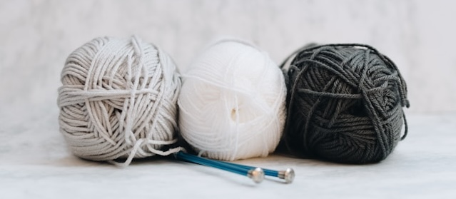

.png) Kyra's Cozy Corner
Kyra's Cozy Corner
Who We Are
At Kyra's Cozy Corner, we're bringing families together through the timeless art of fiber arts. Based in Medford, MA, we create handcrafted hats, scarves, blankets, and more—each piece lovingly made by hand to become a unique gift or personal treasure. Our signature Stitching Generations program pairs grandparents and grandchildren to learn crochet and knitting together, strengthening bonds while creating lasting memories.Our Mission
To foster a vibrant fiber arts community by preserving traditional yarn crafts and bringing generations together through shared creativity.Our Vision
A world where families connect deeply and joyfully, one stitch at a time..jpg)
Why Choose Us
Proven Health Benefits
Our program has been shown to decrease dementia risk by 81% and increase joy by over 50%Expert Guidance
Learn from experienced instructors who make fiber arts accessible and fun for all skill levelsHeirloom Quality
Create pieces that will be treasured for generations, not just seasons
